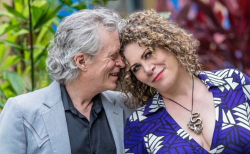

June 15, 7:30pm $10-$20 sliding scale
Posted Mon, Jun 10, 2024; updated Mon, Jun 10, 2024

We are thrilled to annouce an amazing pair of performers are coming to the hall this Saturday, June 15. Dayna Kurtz and Robert Maché will bring their New Orleans sound to Montague!
Admission is on a sliding scale: $10 - $20
Dayna Kurtz - It's How You Hold Me (live @ Bimhuis Amsterdam)
Over the past decade, the New Jersey born, now New Orleans resident vocalist/writer/musician/producer has been bestowed with many awards and praises, including being named the Female Songwriter of the Year by the National Academy of Songwriters. Norah Jones and Bonnie Raitt have raved about her in interviews, and she's performed on such high-profile radio shows as World Cafe, Mountain Stage and NPR's Morning Edition and Tell Me More. She's toured and opened for the likes of Elvis Costello, Richard Thompson, Mavis Staples, Rufus Wainwright, B.B. King, Dr. John, Richie Havens, Keren Ann, Chris Whitley, and the Blind Boys of Alabama.
On her work and friendship with Robert Maché (Continental Drifters, Steve Wynn) Kurtz says, “I’ve loved Robert’s playing for such a long time, and we’ve been friends longer than we’ve been touring partners – he was one of the first musicians to befriend me in New Orleans. That we had such undeniable chemistry has been one of the greater recent gifts of my life, and I just wanted to document it somehow, and quite a few people in my life including my label have suggested a live record. I’d been hesitant, only because there’s only a few live records I listen to with the devotion I’d give a beloved studio record. It’s notoriously really difficult to capture the feeling of being there in the dark experiencing it. Then the challenge of it intrigued me.”